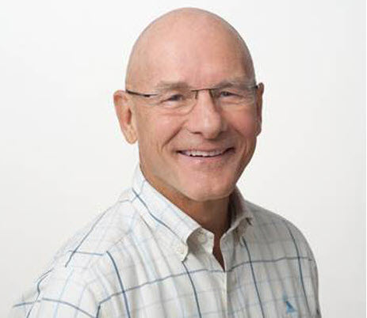
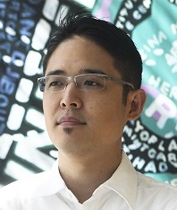
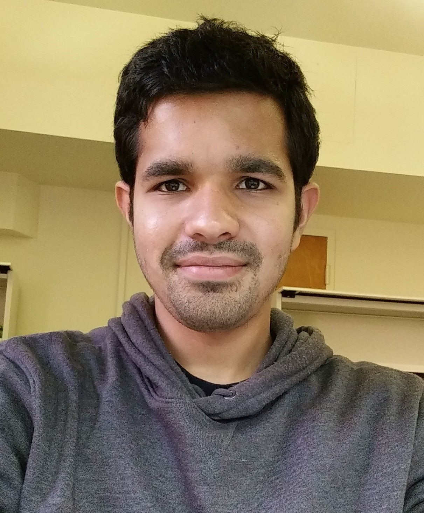
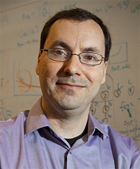

Over the past two decades, the world has witnessed a dramatic rise in computing across data centers, mobile, and communication technologies. As of 2015 information computing technology (ICT) accounts for up to 5% of the global energy demand. Unfortunately, as the demand for computing grows with new applications and platforms so will its energy demand. Many technology companies, including Microsoft, Google, Facebook, Apple, and Amazon, have pledged to reduce their carbon footprints over the next decade. Meeting these pledges and enabling sustainable computing requires immediate action from the systems and architecture community.
To attend CLEAR please register for the ISCA conference.
Program
The inaugural CLEAR workshop will be held in conjunction with ISCA 2021 on Thursday June 17th, 2021. To attend the workshop please register for ISCA 2021. Optionally, please express your intent to attend in this Google sheet.
| Time | Talk title | Presenter | Links |
| 9:00am ET – 9:15am ET | The Landscape of Computing’s Environmental Footprint | Carole-Jean Wu (FAIR) | Slides, Video |
| 9:15am ET – 9:45am ET | Chasing Carbon: Going Beyond Efficiency to Understand the Elusive Environmental Footprint of Computing | Udit Gupta (FAIR/Harvard) | Slides, Video |
| 9:45am ET – 10:15am ET | Good, Better, Best: How architects can help drive decarbonisation of datacenter power consumption (hint: efficiency is not enough) | Andrew A Chien (University of Chicago and Argonne) | Slides, Video |
| 10:15am ET – 10:45am ET | The environmental footprint of logic CMOS technologies | Lars-Åke Ragnarsson (iMec) | Slides, Video |
| 10:45am ET – 11:15am ET | Coffee Break (open networking and discussion session) | ||
| 11:15am ET – 11:45am ET | Greenhouse gas impacts across hyperscale data center supply chain | Jordan Tse (Facebook) | Slides, Video |
| 11:45am ET – 12:15pm ET | Carbon Footprint of Compute Systems | John Miranda (Intel) | Slides, Video |
| 12:15pm ET – 12:45pm ET | Computing, Limits, and Society | Jay Chen (Berkeley) | Slides, Video |
| 12:45pm ET – 1:15pm ET | Coffee Break (open networking and discussion session) | ||
| 1:15pm ET – 1:45pm ET | Energy and Carbon Emissions of Neural Architecture Search and Large Model Training | David Patterson (Google/Berkeley) | Slides, Video |
| 1:45pm ET – 2:15pm ET | Batteries Not Included: Reimagining Computing for the Next Trillion Devices | Josiah Hester (Northwestern University) | Video |
| 2:15pm – 2:45pm ET | Improving Datacenter Power Efficiency with Intelligent Power Capping and Oversubscription | Pulkit Misra (Microsoft) | Slides, Video |
| 2:45pm ET – 3:45pm ET | Industry/Academic Panel | Barath Raghavan (USC) George Porter (UCSD) Dharmesh Jani (Facebook) | Video |
Workshop speakers
 | Udit Gupta is a 5th year PhD student in CS at Harvard University and received his B.S. in ECE from Cornell University in 2016. His research interests focus on improving the performance and energy efficiency of emerging applications in computer systems and architecture by co-designing solutions across the computing stack. His recent work explores the characterization and optimization of at-scale deployment of deep learning based personalized recommendation systems. |
| Carole-Jean Wu is a Research Scientist at Facebook AI Research. Her research focus lies in the domain of computer system architecture with particular emphasis on energy- and memory-efficient systems. Her research has pivoted into designing systems for machine learning execution at-scale. In general, she is interested in tackling system challenges to enable efficient, responsible AI execution. Carole-Jean chairs the MLPerf Recommendation Benchmark Advisory Board, co-chaired MLPerf Inference, and serves on the MLCommons Board as a director. She received her M.A. and Ph.D. from Princeton and B.Sc. from Cornell. | |
![William Eckhardt Professor Andrew A. Chien, University of Chicago Computer Science]() | Andrew A. Chien is Eckhardt Professor at the University of Chicago, directs the CERES Center for Unstoppable Computing, serves as EiC for Communications of the ACM, and serves the National Science Foundation CISE Advisory Committee. Dr. Chien leads the Zero-carbon Cloud project, exploring synergies between cloud computing and the renewable power grid. Dr. Chien was VP of Research at Intel Corporation from 2005-2010, SAIC Chair Professor at UCSD, and also a Professor at the University of Illinois. Dr. Chien is an ACM, IEEE, and AAAS Fellow, and earned his PhD, MS, and BS from the Massachusetts Institute of Technology |
|  | David Patterson is a UC Berkeley professor, Google distinguished engineer, RISC-V International Vice-Chair, and RISC-V International Open Source Laboratory Director. His best known projects are likely RISC and RAID. He co-authored seven books, including Computer Architecture: A Quantitative Approach, and shared the 2017 ACM A.M Turing Award shared with his co-author John Hennessy. |
|  | Jay Chen is a Senior Researcher at ICSI who spent over 15 years designing and deploying ICTs in a variety of development contexts, from urban slums to rural areas — working with individuals, development organizations, and other stakeholders. He is a co-organizer of the LIMITS workshop, which concerns the role of computing in the face of real-world limits that are seldom discussed in contemporary computing research. |
| John Miranda is a Director in Intel’s Data Center Group’s Strategy Office who has been advancing sustainability initiatives across Intel and its ecosystem partners. This advocacy is motivated by the view that sustainability will be an imperative for the technology ecosystem to address over the coming decade. John’s prior background includes running software engineering teams at Intel. John is a guest lecturer at University of Arizona Eller Business School, and a board advisor to TTI Vanguard Advanced Technology Research Group. | |
| Jordan Tse is a Sustainability Program Manager at Facebook. She leads the environmental work under the Responsible Supply Chain program, which supports the electronics supply chain for both Infrastructure and FB Reality Labs (e.g. Oculus & Portal). | |
 | Josiah Hester is the Breed Chair of Design and Assistant Professor of Computer Engineering at Northwestern University. He designs, builds and deploys tiny computers that last for decades, supporting applications in healthcare, conservation, and interactivity. He works towards a sustainable future for computing informed by his Native Hawaiian (Kanaka maoli) heritage. He applies his work to health wearables, interactive devices, and large-scale sensing for sustainability and conservation, supported by multiple grants from the NSF, NIH, DARPA, and 3M. He won the 3M Non-tenured Faculty Award in 2021. His work has received a Best Paper Award and Best Paper Nomination from ACM SenSys, and has been covered by the Wall Street Journal, The Verge, CNET, the BBC, and others. |
| Lars-Åke Ragnarsson did his MSc and PhD in electrical engineering at Chalmers University of Technology in Sweden. After 2.5 years at IBM TJ Watson Research Center as a postdoctoral scientist he relocated to Belgium and imec in 2002. He currently holds a scientific director position in Compute and Memory Technologies. He was early involved in the development of high-k and metal gate CMOS technologies. Today he covers topics in research fields ranging from 3D NAND and FEFET in memory technologies to multi Vt RMG in logic. He is the author or coauthor of over 200 journal and conference papers. | |
|  | Pulkit Misra is a Sr. Research Engineer in the Cloud Efficiency group at Microsoft Research. He works on improving the power and performance efficiency of Microsoft’s datacenters. |
Organizers
| Udit Gupta is a 5th year PhD student in CS at Harvard University and received his B.S. in ECE from Cornell University in 2016. His research interests focus on improving the performance and energy efficiency of emerging applications in computer systems and architecture by co-designing solutions across the computing stack. His recent work explores the characterization and optimization of at-scale deployment of deep learning based personalized recommendation systems. |
| Carole-Jean Wu is a Research Scientist at Facebook AI Research. Her research focus lies in the domain of computer system architecture with particular emphasis on energy- and memory-efficient systems. Her research has pivoted into designing systems for machine learning execution at-scale. In general, she is interested in tackling system challenges to enable efficient, responsible AI execution. Carole-Jean chairs the MLPerf Recommendation Benchmark Advisory Board, co-chaired MLPerf Inference, and serves on the MLCommons Board as a director. She received her M.A. and Ph.D. from Princeton and B.Sc. from Cornell. | |
|  | David Brooks received his B.S. from University of Southern California in EE in 1997 and his M.A. and Ph.D. in EE from Princeton in 2001. He spent a year at IBM T.J. Watson Research Center in 2001 before joining Harvard in 2002. His research focuses on the interaction between the architecture and software of computer systems and underlying hardware implementation challenges, including power, reliability, and variability issues across embedded and high-performance computing systems. |
| Gu-Yeon Wei received his B.S.E.E., M.S., and Ph.D. in Electrical Engineering from Stanford University in 1994, 1997, and 2001, respectively. In 2000, he joined Accelerant Networks (now a part of Synopsys) in Beaverton, Oregon as a Senior Design Engineer. In 2002, he joined Harvard University. His research interests span a variety of topics such as integrated voltage regulators, flexible voltage stacking, power electronics, low-power computing architectures and circuits, auto-parallelizing compilers, and more. | |
| Hsien-Hsin Sean Lee leads the SysML Boston Research group at Facebook AI Research. Previously, he directed the EDA solutions and PDK development at Taiwan Semiconductor Manufacturing Co. (TSMC). Prior to that, he was an Associate Professor at Georgia Tech (ECE), an Architecture Manager at Agere Systems, and a senior CPU architect at Intel. Dr. Lee holds a Ph.D. in CSE from the University of Michigan. He received the NSF CAREER Award, the DoE Early CAREER Award, four Best Paper Awards, and the 10-year most influential paper award from ITC-2017. He holds 31 US patents and is a Fellow of the IEEE. |
Diversity Statement
Enabling sustainable computing requires a myriad of solutions across the computing stack. As such, an important mission for this workshop is to foster a diverse, collaborative, and innovative environment.
The list of speakers and organizers of this workshop represent diversity in multiple dimensions as follows:
- Technical expertise and experience, ranging from application developers to data center and mobile system designers, and from research to product development.
- Organizations from universities and industries.
- Professional experience in academia from current graduate students, PhD graduates, tenure track faculty, to tenured faculty, and in industry from research scientists to engineering directors.
- Ethnic backgrounds and genders of the organization committee and the speakers.
Access: We plan to make all workshop materials including presentation slides available online. We will also publish a summary of the workshop’s findings and discussions to foster collaboration.